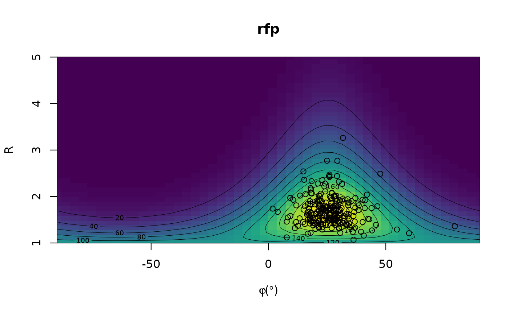
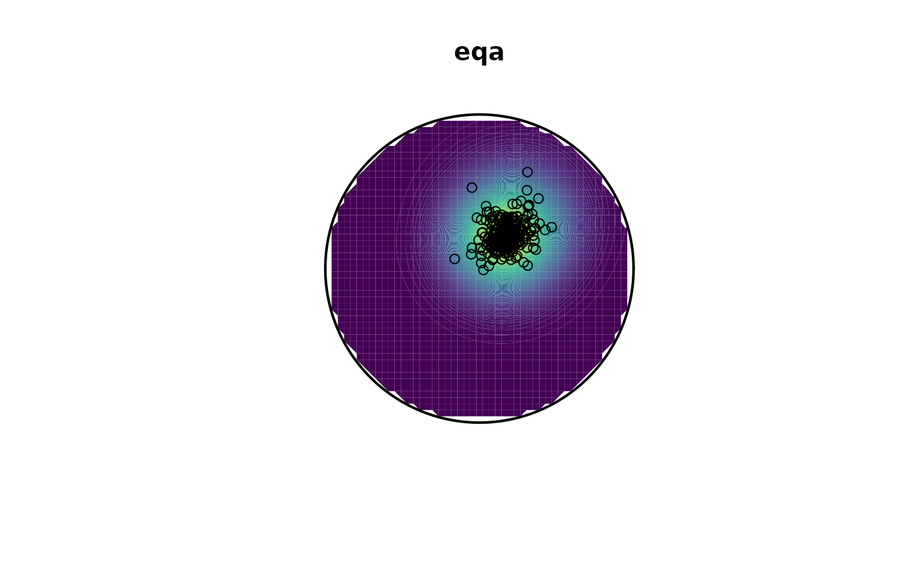

Densities in hyperbaloidal projections of geological fabric and finite strain data density calculations done on the unit hyperbaloid (Vollmer, 2018). Options are given for equidistant (Elliott), equal-area, stereographic, orthographic, exponential, and radial projections, as polar azimuthal or cylindrical (cartesian, RfPhi-type) plots.
Usage
hypercontour(
r,
phi,
proj = c("eqd", "eqa", "stg", "ort", "gno", "lin", "rdl", "rfp"),
normalize = TRUE,
rmax = NULL,
kappa = 40,
nnodes = 50L
)Arguments
- proj
character. Projection,
'eqd'for equidistant (Elliot plot),'eqa'for equal-area,'stg'for stereographic,'ort'for orthographic,'gno'for gnomonic,'lin'for exponential (linear R),'rdl'for radial,'rfp'for Rf/phi (cylindrical instead of polar).- normalize
logical.
- rmax
maximum R value (if
NULL, computed automatically)- kappa
smoothing parameter
- nnodes
grid resolution. higher is more accurate but slower, 30 is good, but 50 is recommended for final plots, default = 50.
Value
list with:
x, y: vectors of the projection coordinates for the density grid
z: density matrix
points: projected data points
frame: plot frame (circle or square)
Details
The data must be in a comma delimited csv text file with one (R, phi) pair per line, where R = strain ratio (max/min), phi = orientation of long (max) axis from x. Contours are equally spaced over the probability density distribution.
References
Vollmer, F.W., 2018. Automatic contouring of geological fabric and finite strain data on the unit hyperboloid. Computers & Geosciences, https://doi.org/10.1016/j.cageo.2018.03.006
Examples
data(ramsay)
out <- hypercontour(ramsay[, 'R'], ramsay[, 'phi'], proj = "rfp")
image(out$x, out$y, out$z,
asp = ifelse(out$proj != "rfp", 1, NA),
xlim = c(-90, 90),
ylim = c(1, out$rmax),
xlab = bquote(varphi ~ "(" * degree * ")"), ylab = "R",
main = out$proj,
col = viridis::viridis(100)
)
contour(out$x, out$y, out$z, add = TRUE, lwd = .5)
points(out$points)

out <- hypercontour(ramsay[, 'R'], ramsay[, 'phi'], proj = "eqa")
levels <- pretty(range(out$z, na.rm = TRUE), 100)
cols <- viridis::viridis(n = length(levels) - 1)
plot(out$x, y = out$y, "n", xlab = NULL, ylab = NULL, asp = 1, axes = FALSE, ann = FALSE)
graphics::.filled.contour(out$x, out$y, out$z, levels = levels, col = cols)
points(out$points)
lines(out$frame, lwd = 2)
title(main = out$proj)
